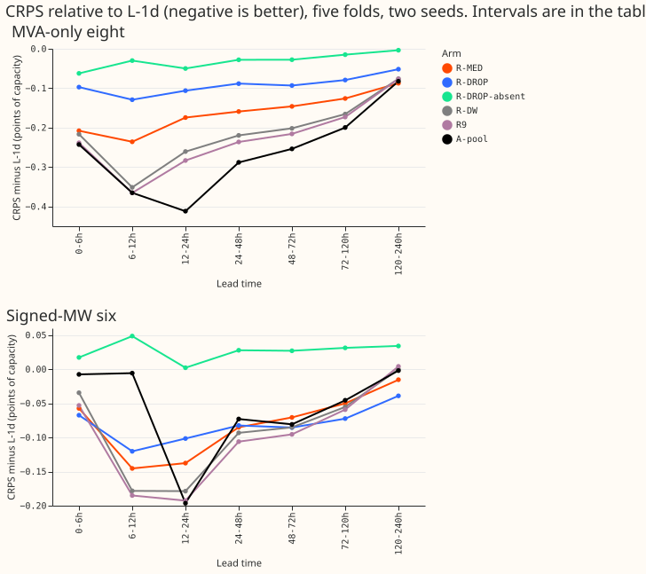
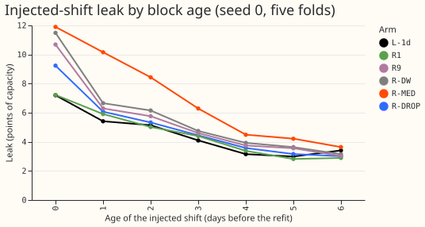
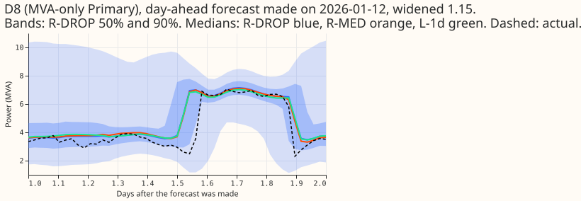
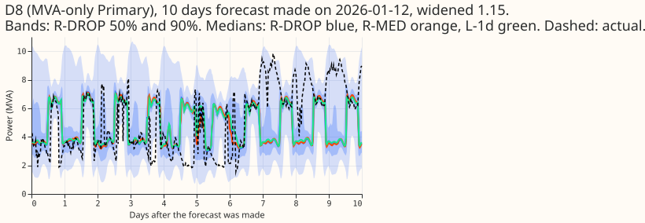

Can a median of the same half-hour over past days, or training with the power readings randomly removed, make the lag-light demand network less sensitive to load-shift events and to missing readings without losing its gain?
Averaging the same half-hour over several past days did not make the lag-light demand network safer, and randomly removing the readings in training cost most of its gain. The question was whether two changes to experiment 539's network (the lag-free network plus the day-ago and week-ago power readings) keep its gain and cut its sensitivity to load-shift events. R-MED replaces the two readings by medians of the same half-hour over the last 7 and 28 days. R-DROP removes all six reading inputs in 30% of rows during training. All numbers are interim and unaudited, in points of capacity; lower CRPS is better.
Verdict: not supported. P1 failed on both parts, P2 failed, and P3 held.
Figures




Results
- Pre-registered predictions. Judged in the 24-48 h, 48-72 h, and 72-120 h bands at the eight. P1 (R-MED within 0.03 of R-DW, leak at most 5.2): failed. R-MED minus R-DW is +0.060, +0.056, and +0.040, and the leak is 7.02. P2 (R-DROP with readings present keeps 90% of R-DW's closed gap): failed. R-DROP closes 31%, 37%, and 40% of L-1d's gap to A-pool, which is 40%, 47%, and 48% of R-DW's closed gap. P3 (R-DROP with readings absent costs at most 0.15 more than L-1d): held. It is 0.028, 0.028, and 0.015 below L-1d.
- Absolute CRPS at the eight, 24-48 h / 48-72 h / 72-120 h. A-pool 4.197 / 4.311 / 4.538; R9 4.249
/ 4.349 / 4.565; R-DW 4.266 / 4.363 / 4.572; R-MED 4.326 / 4.419 / 4.612; R-DROP 4.397 / 4.471 /
4.659; R-DROP absent 4.457 / 4.537 / 4.723; L-1d 4.485 / 4.565 / 4.738;
manual_heuristic5.543 / 5.406 / 5.568. The full table, every band, and the six are in the storedscores/absolute.csv. - Counted contrasts at the eight (95% month-block bootstrap, 5 blocks, near min-to-max; Bonferroni count 42 = 3 contrasts x 7 bands x 2 sets; minimum detectable effect 0.13, 0.14, 0.10). R-MED minus R-DW: +0.060 (+0.041 to +0.093; 5 of 5 folds worse), +0.056 (+0.016 to +0.104), +0.040 (+0.009 to +0.074). R-DROP minus R-DW: +0.131 (+0.046 to +0.277; 5 of 5 folds worse), +0.109 (+0.043 to +0.240), +0.086 (+0.024 to +0.244). R-DROP absent minus L-1d: -0.028 (-0.087 to +0.024), -0.028 (-0.079 to +0.031), -0.015 (-0.066 to +0.019). The R-MED contrasts are smaller than the minimum detectable effect, so their sign is consistent across folds but their size is not firmly established.
- At the six the contrasts are inside the minimum detectable effect: R-MED minus R-DW +0.008, +0.015, +0.005; R-DROP minus R-DW +0.011, 0.000, -0.017 (all intervals include zero). R-DROP absent minus L-1d is +0.028 (+0.006 to +0.054), +0.027, +0.031 (+0.004 to +0.061).
- Injected-shift leak (experiment 511's stress world, seed 0, five folds, all leads). L-1d 4.49, R1 4.52, R-DROP 4.97, R9 5.38, R-DW 5.68, R-MED 7.02. At block age 0 the leak is 7.20 (L-1d), 9.23 (R-DROP), 11.49 (R-DW), and 11.90 (R-MED). The leak of R-MED is above R-DW's at every block age from 0 to 6. A likely reason, not tested here, is that the 7-day median has most of its members inside the 7-day shifted block, so the whole shift enters the input for several days.
- Checks. Every power value and every median member is at least 3.5 h older than the origin,
asserted for all rows (24,979,347 training rows and 1,142,520 test rows); 2,000 random rows per
month recomputed with an explicit loop matched the medians. Every weather input comes from the run
issued at or before the origin (
nwp_init_time <= power_fcst_init_timeasserted for all 153 test origins and every training origin). Example test row: origin 2026-01-01 09:00 UTC, target 2026-01-01 15:00 UTC, weather run 2026-01-01 00:00 UTC, day-ago reading observed 2025-12-31 15:00 UTC. Cost under 1 GPU-h, one process under 8 GB. - Reviews. One Sonnet code review before the first fit found a crash in the checks writer, a cache key that could be reused across months, and a missing empty-window marker for the absent scoring; all three were fixed. No results review and no write-up review were run, because the quota is tight, so the numbers are unaudited.
Caveats
- Two seeds and five folds; the leak is one seed. R-DROP and R-MED differ from R-DW only in the six inputs, so the fit-to-fit noise of 539 applies.
- R-DROP's dropout is drawn once per refit, not once per epoch, and covers the early-stopping rows. "Flag 0" in the brief was read as "present flag 0", which is the missing flag set to 1.
- The 4-week median is the 28 most recent days at the same half-hour, and the 7-day median the 7 most recent, with at least 10 and 3 members observed; other choices were not tried.
- Experiments 538 and 539 are unmerged, so R-DW and R9 numbers come from their private tables.
- NGED load-shift events may be missing from its logs, so rows with no labelled event may hold unlabelled events, and the leak is measured on injected shifts only.
What to try next
- Guard the day-ago and week-ago readings with a shift detector's probability (nullify the lag when the probability is high), then measure the leak and CRPS together.
- Accept experiment 539's leak of 5.68 if it stays under the 6-point limit, since neither variant improved both numbers.